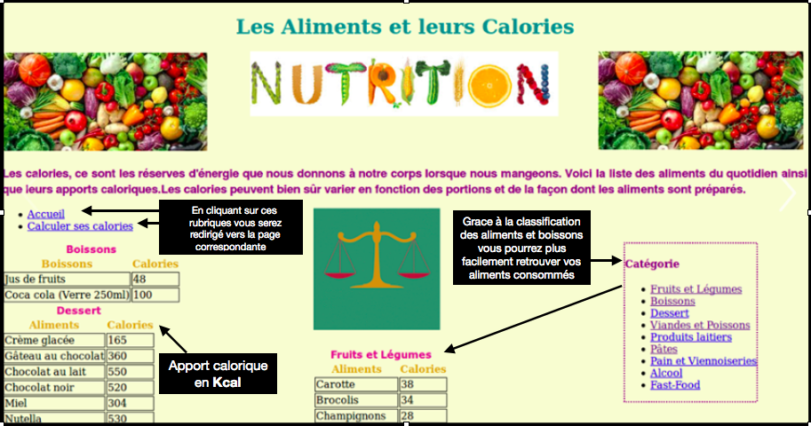
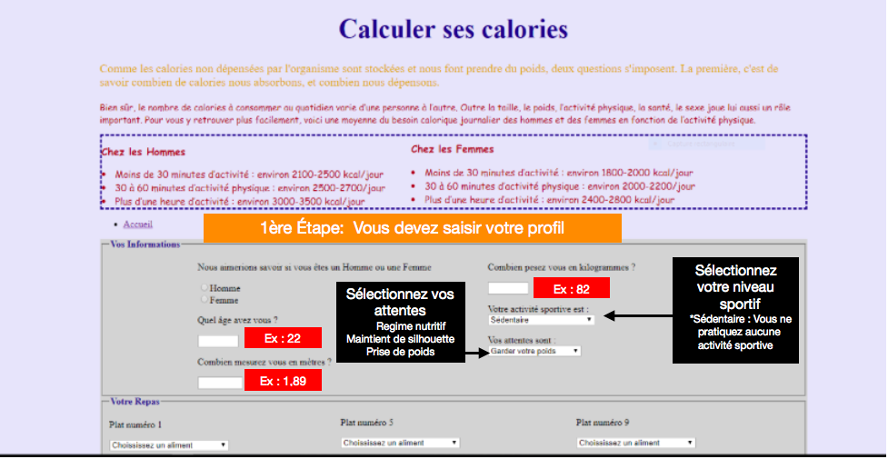
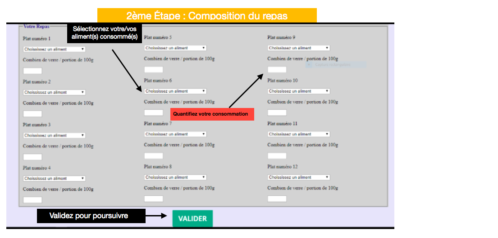

Bienvenue sur notre site internet

Notre site a éte conçu afin que vous puissiez suivre votre alimentation et ainsi vous éclairer sur vos besoins et consommations caloriques au quotidien
Notre site a éte conçu afin que vous puissiez suivre votre alimentation et ainsi vous éclairer sur vos besoins et consommations caloriques au quotidien
Sur la page d’accueil , trois rubriques vous sont proposées :
1- Comment ça marche 🤔 ? ( Page qui s’ouvre à vous actuellement ) Cette page a pour fonction de vous orienter sur l’utilisation du site

2- Les aliments et leurs calories 🍔 Cette page informe l’utilisateur quand à la quantité de calories présent dans chaque aliment issue de sa consommation personnelle et lui permettra également de prendre connaissance de la base de données exploitée
3- Calculer ses besoins caloriques Cette page fait office de « calculatrice » Lors de son ouverture, l’utilisateur devra renseigner son sexe , son âge, sa taille , sa masse , sa fréquence d’activité physiques et ses attentes. Dans un second temps, l’utilisateur devra composer virtuellement son plat précédemment consommé à l’aide des aliments proposés sur le site
 Lors de la deuxième étape, il vous sera demandé de renseigner vos plats consommés lors de votre dernier repas Par exemple si vous avez consommé du lait ,vous cliquez sur "LAIT" dans la catégorie "Produits Laitiers" 🥛 